Artificial Intelligence Foundation for Spectroscopy
KDD 2026
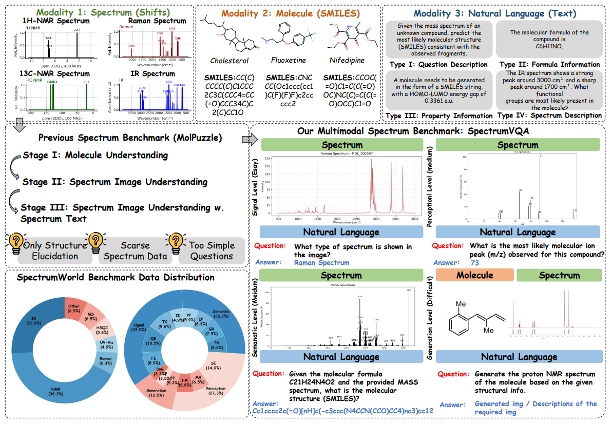
SpectrumWorld standardizes the full lifecycle of spectroscopy research: data curation, annotation, benchmark generation, model integration, evaluation, and public comparison.
IR, Raman, NMR, MS, UV-Vis, HSQC, ESR, and other real-world spectral sources.
From spectrum type classification to molecular structure elucidation and de novo generation.
Curated from public repositories, literature mining, proprietary data, and computational simulations.
Open- and closed-source multimodal LLMs are benchmarked under unified evaluation protocols.
SpectrumVQA moves from low-level signal grounding to high-level scientific reasoning and generation, mirroring real analytical chemistry workflows.
Spectrum type classification, quality assessment, feature extraction, and impurity peak detection.
Functional group recognition, elemental composition prediction, peak assignment, and property prediction.
Molecular structure elucidation, fusing spectroscopic modalities, and multimodal molecular reasoning.
Forward problems, inverse problems, and de novo generation for spectra and molecular structures.
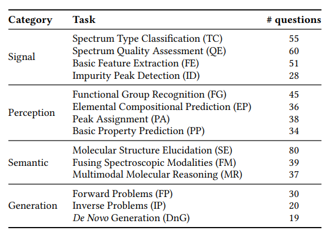
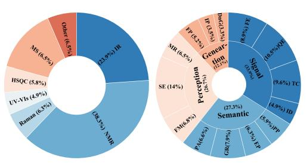
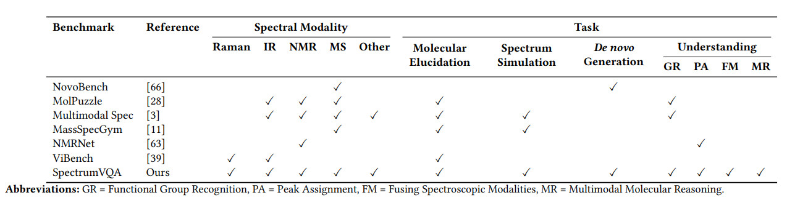
SpectrumAnnotator combines automated task synthesis with manual expert verification and SpectrumVerifier-based quality assurance.
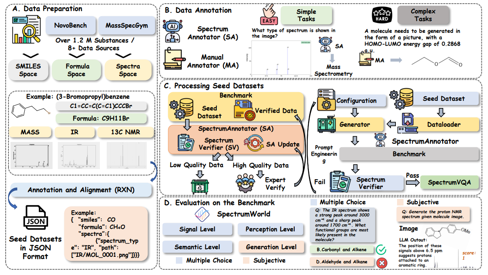
SpectrumLab provides benchmark groups, dataloaders, model interfaces, evaluator abstractions, model zoos, and leaderboards for reproducible AI-ready spectroscopy.
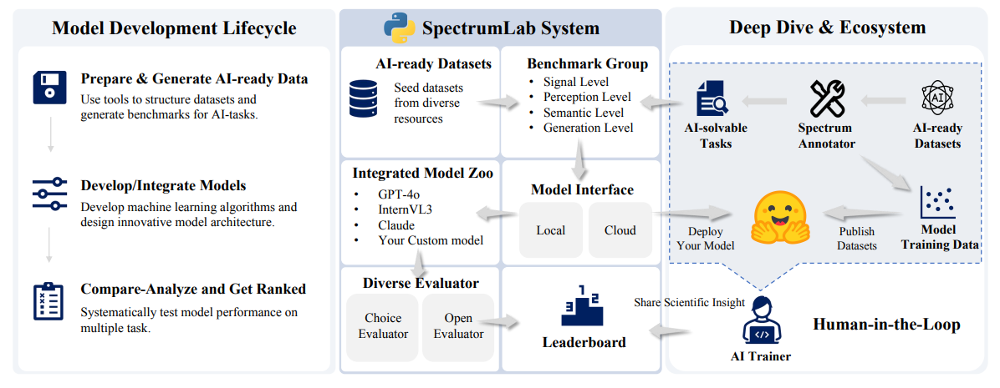
Signal and perception tasks are often tractable, while semantic fusion and generation reveal clear limitations in present multimodal LLMs.
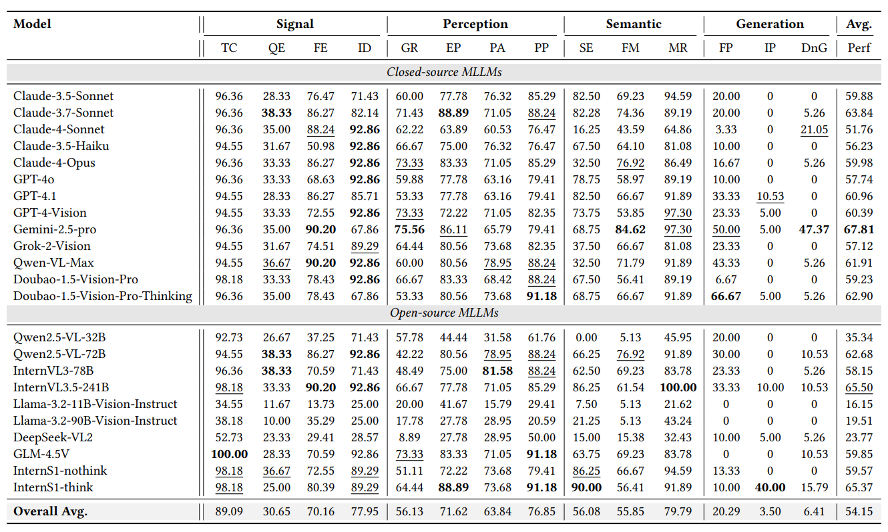
SpectrumVQA evaluates models on realistic spectroscopy questions that combine visual signals, molecular structures, formulas, and natural language instructions.
Identify spectrum type, quality issues, low-level features, and impurity peaks.
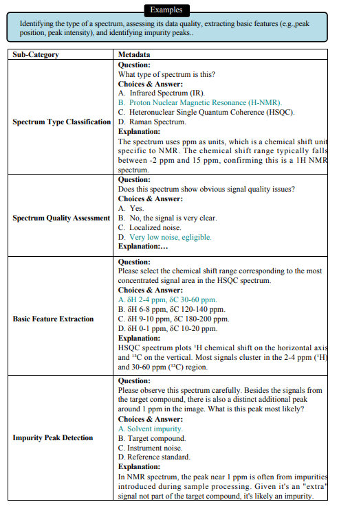
Recognize functional groups, elemental clues, peak assignments, and properties.
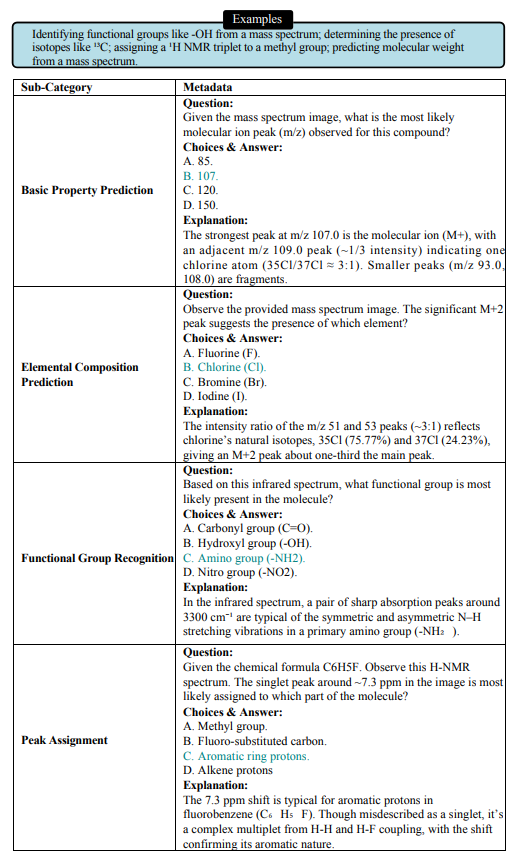
Fuse formula, spectrum, and molecular context for structure-level reasoning.
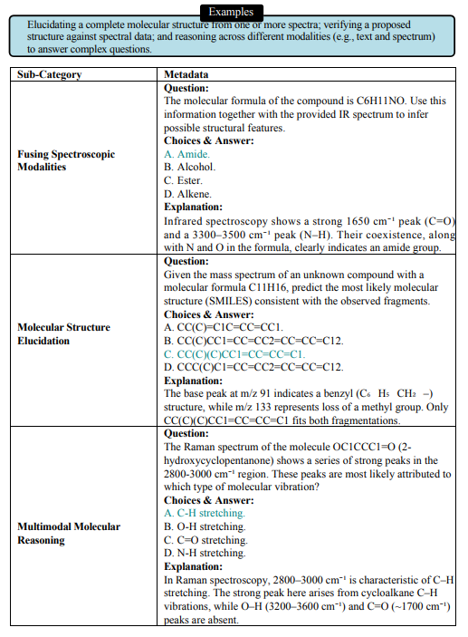
Generate spectra or molecular structures under chemical and spectroscopic constraints.
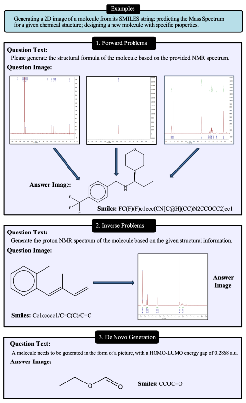
Failures cluster around low-level spectral grounding, peak interpretation, property prediction, cross-modal reasoning, and generation.
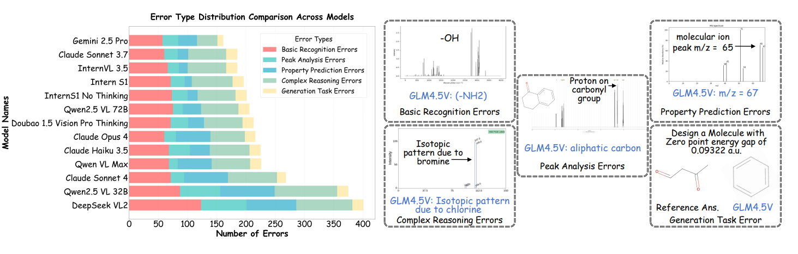
If you find SpectrumWorld useful, please cite the paper.
@inproceedings{yang2026spectrumworld,
title = {SpectrumWorld: Artificial Intelligence Foundation for Spectroscopy},
author = {Yang, Zhuo and Xie, Jiaqing and Shen, Shuaike and Wang, Daolang and Chen, Yeyun and Gao, Ben and Sun, Shuzhou and Qi, Biqing and Zhou, Dongzhan and Bai, Lei and Zhang, Shufei and Gu, Qinying and Chen, Linjiang and Jiang, Jun and Fu, Tianfan and Li, Yuqiang},
booktitle = {Proceedings of the 32nd ACM SIGKDD Conference on Knowledge Discovery and Data Mining},
year = {2026}
}